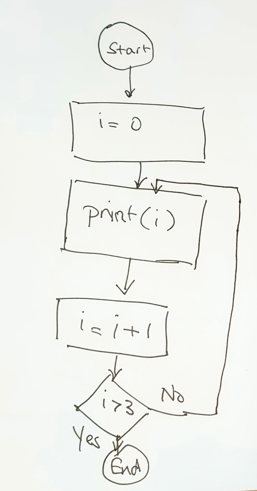

MCP SVG Animator
An MCP server that creates animated SVG diagrams from natural language descriptions or hand-drawn sketches. The examples below show the iterative development process, where animations are refined through conversational feedback until the desired result is achieved.
| Example | Input | Output 1 | Correction | Final Output |
|---|---|---|---|---|
| Flowchart |

Animate this flowchart, using a small red dot to trace the flow of execution.
|
flowchart_animation.webm |
||
| Hydrogen Atom |

Animate this image of a hydrogen atom. The electron should have a black minus in the middle, and should move along the circle around the proton.
|
hydrogen_atom_buggy.webm |
The electron is circling around the origin, not around the proton.
|
hydrogen_atom.webm |
| Fission Reaction |
Create a diagram of a neutron hitting an atom of U-235, showing fission and the release of two new neutrons.
|
fission_reaction.webm |
||
| Chain Reaction |
Create a picture of a chain reaction, with a neutron triggering a single uranium atom split, generating two neutrons causing two to split, then four, then eight.
|
chain_reaction.webm |
||
| Architecture Diagram |
Create an architecture diagram showing data flow from Client to Server to Database. Use connections with arrows between boxes, and add labeled text with white backgrounds for HTTP and SQL protocols.
|
connection_demo.webm Features: |